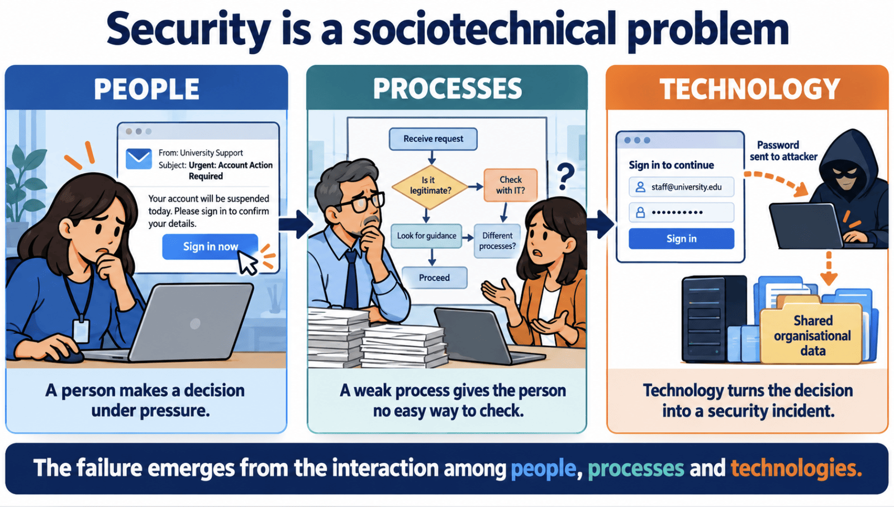
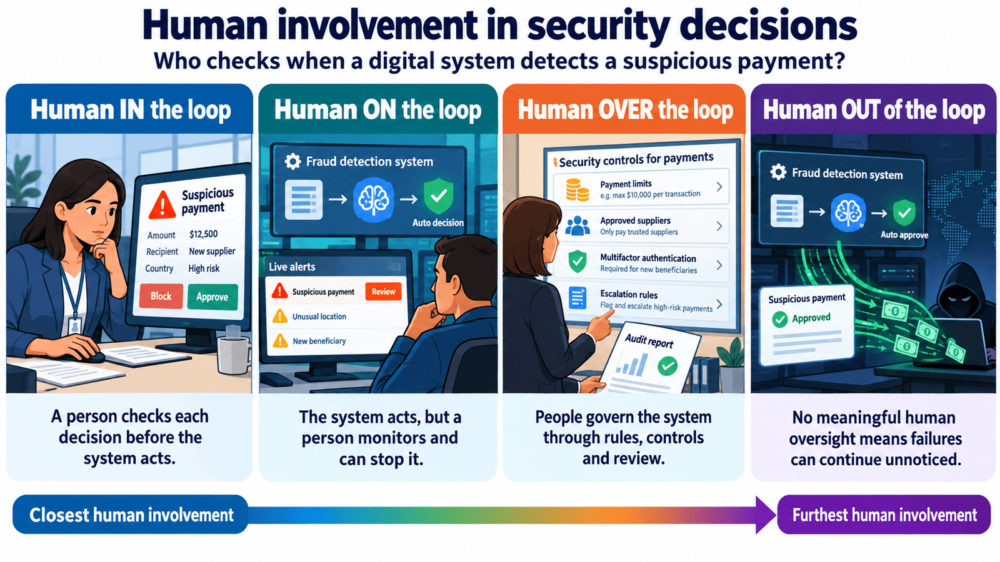
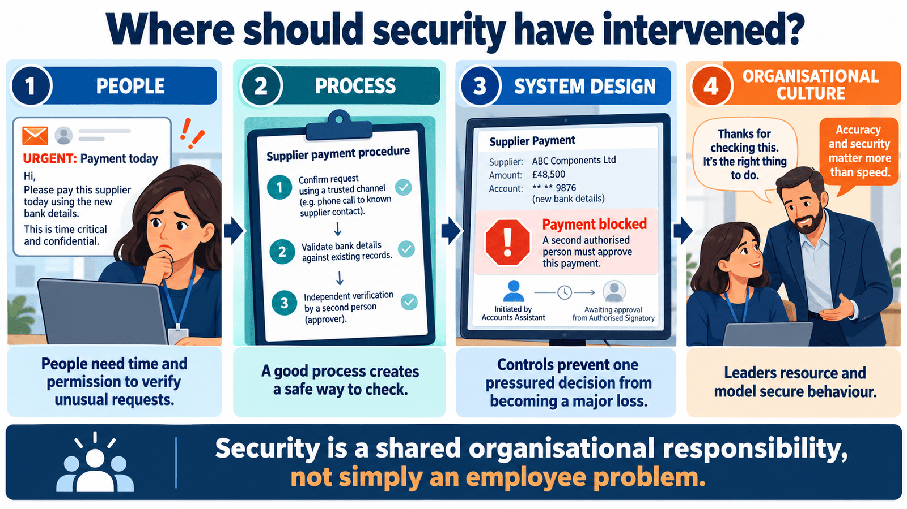
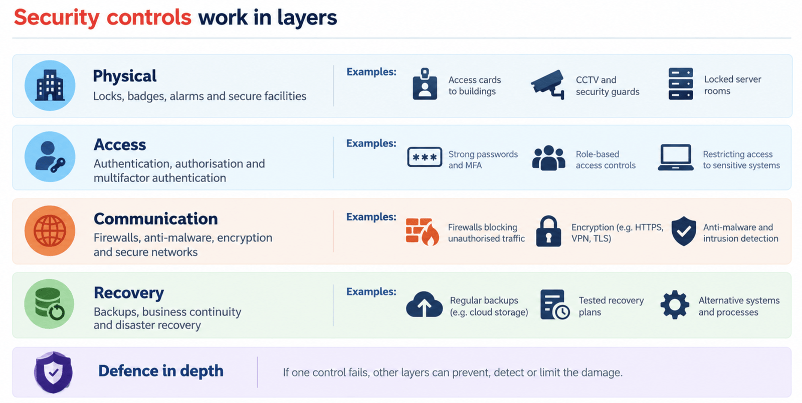
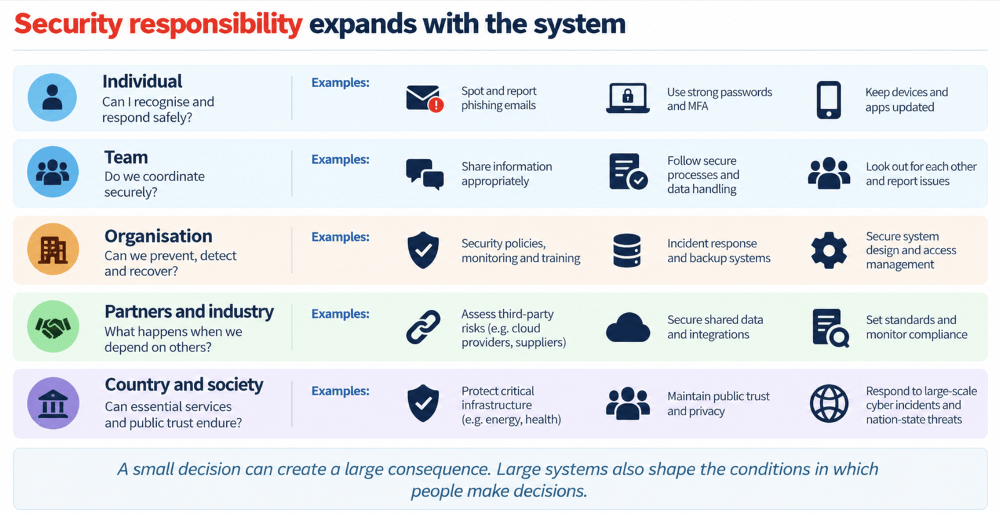

The CIA triad
Confidentiality, integrity and availability provide a practical way to frame what security is protecting.
These visuals are adapted from Class 6: Security and extend the companion site with a systems view of information security.
Confidentiality, integrity and availability provide a practical way to frame what security is protecting.

Security depends on the interaction of people, processes and technology.

Good design supports human judgement and makes secure decisions easier to perform.

Consider the person, process, system design and organisational culture.

Policy, access, communication, recovery and defence in depth address different failure points.

Security extends across teams, partners, industries and public institutions.
Source: Class 6: Security, UNSW Business School, 2026. Visuals are teaching materials, not independent evidence of incident rates or control effectiveness.